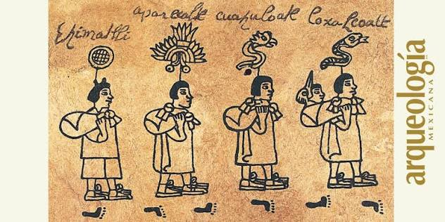
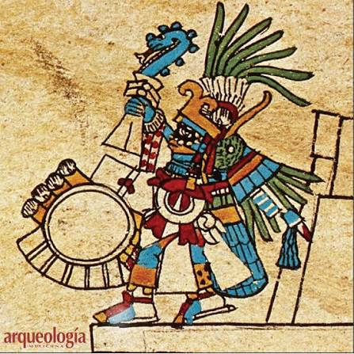
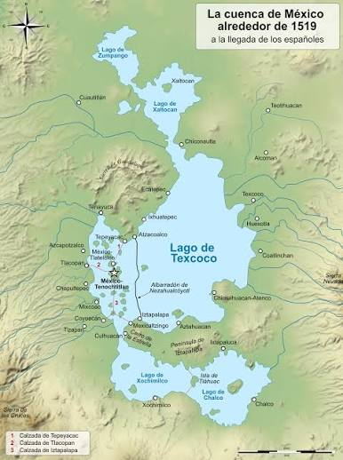
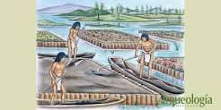

Los mexicas eran un grupo nómada o tributario que decidió abandonar su tierra natal guiados por sus sacerdotes y las órdenes de su deidad patronal. Durante el trayecto cargaban el tlaquimilolli (bulto sagrado de su dios) y fueron cambiando de nombre de "aztecas" a "mexicas" por mandato divino. Se detuvieron temporalmente en varios lugares de la Cuenca de México para sembrar y vivir antes de ser expulsados por pueblos locales.

El dios de la guerra y el sol, Huitzilopochtli, prometió a su pueblo que los guiaría hacia una tierra de riqueza y poder. La señal sagrada inequívoca para detener su marcha y construir su reino definitivo sería encontrar un águila posada sobre un nopal devorando una serpiente (o tunas, según códices tempranos). Esta profecía funcionó como el motor ideológico y de resistencia durante su dura peregrinación

Al llegar a la cuenca, las mejores tierras ya estaban densamente pobladas y dominadas por el imperio Tepaneca. Los mexicas fueron relegados a una zona de islotes inhóspitos, pantanosos y rodeados de agua salobre. Aunque el entorno geográfico parecía desventajoso, les otorgó una defensa militar natural contra ataques terrestres y abundancia de recursos biológicos marinos (peces, aves y algas)

La fundación de México-Tenochtitlan en el Recinto Sagrado del Lago de Texcoco no fue un simple asentamiento geográfico, sino un acto profundamente teocrático que fusionó la voluntad divina con la necesidad de orden social. El proceso se consolidó en tres etapas clave: Primero, se estableció el mandato teocrático en 1325 d.C. Los sacerdotes, guiados por el caudillo Tenoch, legitimaron la ocupación del inhóspito islote al edificar el primer altar de cañas (origen del Templo Mayor) exactamente donde hallaron la señal de Huitzilopochtli. Este acto fusionó el nacimiento del Estado con el culto religioso. Segundo, se estructuró la sociedad a través de los calpullis. El territorio se dividió en cuatro grandes sectores celestes que albergaban estos barrios tradicionales. Cada calpulli agrupaba a familias con oficios comunes y funcionaba de forma autónoma con sus propios templos, aunque todos respondían políticamente ante el consejo sacerdotal. Finalmente, en 1376 d.C., ocurrió la transición monárquica. Para ganar legitimidad ante los señoríos rivales, los mexicas reemplazaron el gobierno de los sacerdotes por el linaje de un Tlatoani (rey). Nombraron a Acamapichtli, un noble con ascendencia de Culhuacán, vinculando formalmente el poder político de Tenochtitlan con la sagrada y respetada dinastía tolteca.
Para solucionar la falta de tierra firme para el cultivo y la vivienda, los mexicas desarrollaron las chinampas: balsas de troncos y cañas cubiertas con lodo del fondo del lago, fijadas al suelo con árboles de ahuejote. Esta innovadora técnica hidráulica transformó el agua en campos altamente fértiles que permitían múltiples cosechas al año, logrando sostener de forma autónoma a una población que llegó a superar los 200,000 habitantes
